Published: 2023-04-12
Source link: https://www.cnphotos.net/academy/show-127.html
Aerial photography is the art of taking photos from the air. It has existed since the mid-1800s.
The first aerial photo was taken from a hot-air balloon over Paris in 1858. Decades later, a British meteorologist named E. D. Archibald invented a kite that could carry a camera. Since then, aerial photography has come a long way. It moved from balloons to helicopters to planes, until drones made it available to everyday photographers.
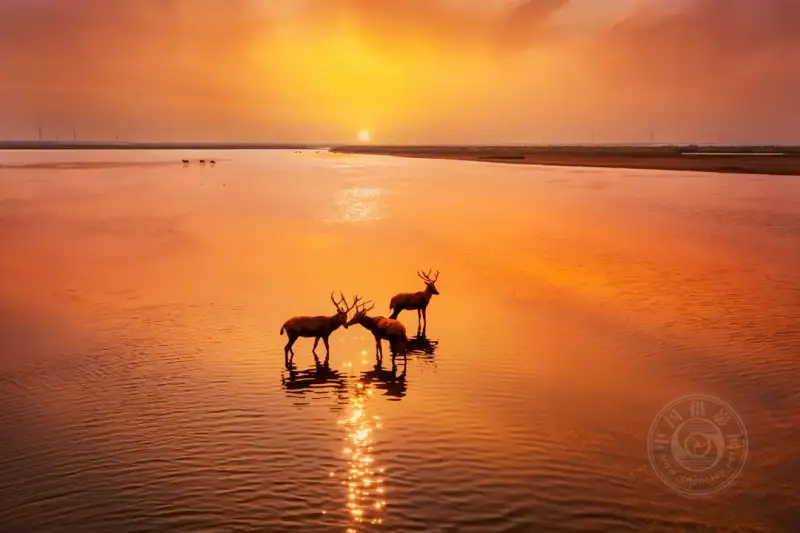
2nd Aerial View National Aerial Photography Contest, Nature, Gold Award
“Most Beautiful Wetland” (one of a series) ©Yang Weijing (Taizhou, Zhejiang)
Today, getting a striking aerial image needs more than the right drone. Composition, technique, and timing matter as much for a stand-out aerial photo.
1. Shoot in golden hour (early morning and evening)
When you shoot outdoors, the angle of the sun has a huge effect on your photos, and aerial work is no exception. In fact, the sun's angle matters even more from the air. Seen from above, a subject looks very different at different times of day.
The best time is early morning and evening, because then you see sharper shadows and a lovely golden color. Plan your shoot for early morning and evening, and you are more likely to catch interesting subjects and stunning views.
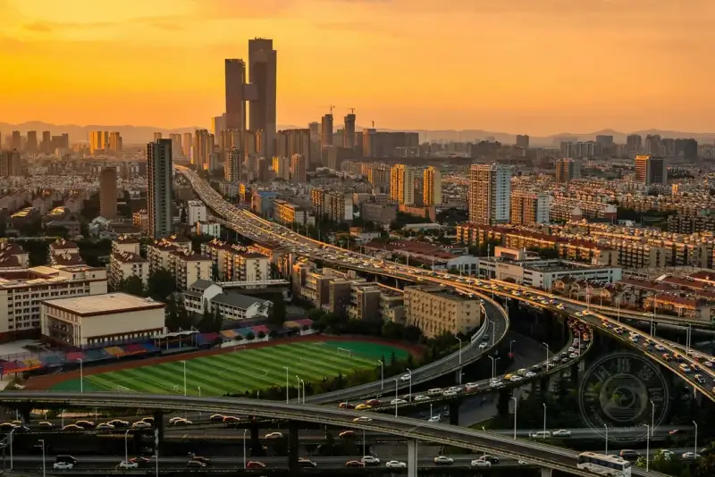
2nd Aerial View National Aerial Photography Contest, Urban Landscape, Gold Award
“City Steps” ©Pan Jun (Nanjing, Jiangsu)
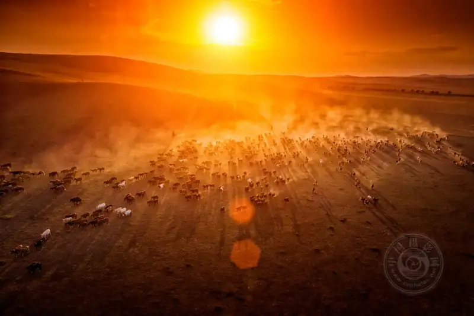
2nd Aerial View National Aerial Photography Contest, Nature, Silver Award
“Sunset Pastoral Song” ©He Ping (Xilingol, Inner Mongolia)
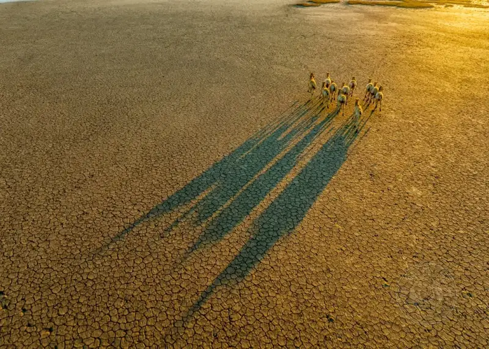
2nd Aerial View National Aerial Photography Contest, Nature, Best Creative Award
“Milu Deer” ©Zhu Ming (Zhenjiang, Jiangsu)
2. Find people
People in the frame draw the eye. Even if they take up only a small part of the composition, they give the viewer a point to focus on and connect with. A person adds emotional depth and a sense of scale that shows the true size of the landscape. An aerial shot with a person is often an example of negative-space and minimalist photography, because the subject is small and surrounded by empty space.
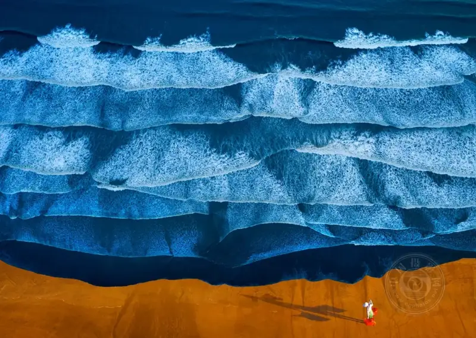
2nd Aerial View National Aerial Photography Contest, Nature, Silver Award
“Harvesting the Tide Flats” ©Huang Jiandong (Fuzhou, Fujian)
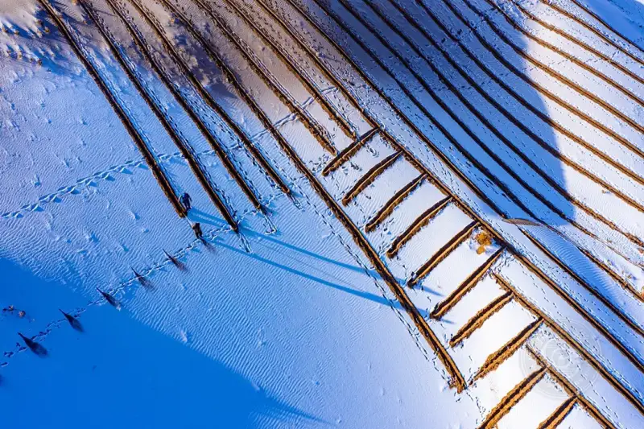
2nd Aerial View National Aerial Photography Contest, Humanistic Documentary, Gold Award
“Green Waters and Green Mountains Are Gold and Silver Mountains” (one of a series) ©Liu Huaiyu (Wuwei, Gansu)
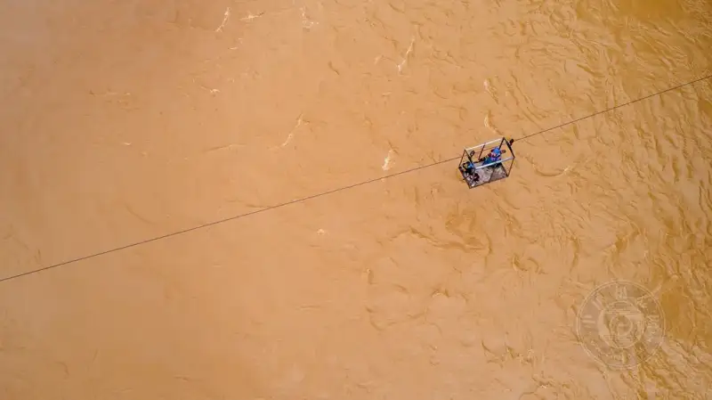
2nd Aerial View National Aerial Photography Contest, Humanistic Documentary, Silver Award
“Zip Line” ©Zou Sen (Chengdu, Sichuan)
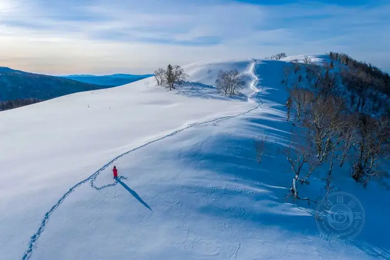
2nd Aerial View National Aerial Photography Contest, Humanistic Documentary, Bronze Award
“Beautiful Heilongjiang Awaits You” (series) ©Yang Su (Shuangyashan, Heilongjiang)
3. Keep the frame simple and clear
When your aerial photo is full of detail, it is hard to focus the viewer on one element. They get lost in the view and cannot hold on to anything.
Keep your image simple and clear, and the viewer will appreciate it more. You may have to leave out elements you like, but you can shoot several photos on each element instead of cramming everything into one.
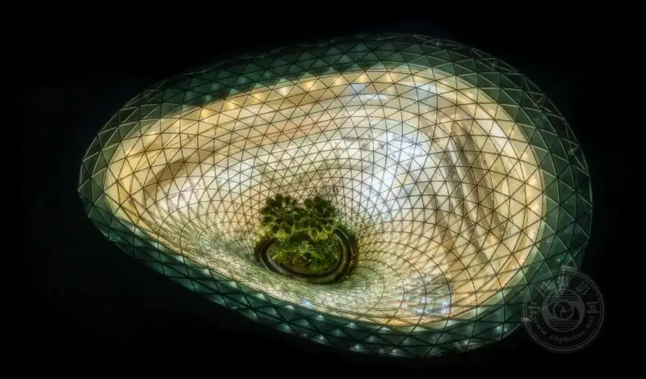
2nd Aerial View National Aerial Photography Contest, Urban Landscape, Gold Award
“Aerial View of Sanya International Duty-Free City” ©Wang Yushan (Sanya, Hainan)
2nd Aerial View National Aerial Photography Contest, Nature, Silver Award
“Three-Color Desert” ©Yang Xiaoqian (Bayingolin, Xinjiang)
2nd Aerial View National Aerial Photography Contest, Humanistic Documentary, Bronze Award
“Mooring” ©Wu Qiushan (Longyan, Fujian)
4. A wide view
If you want to catch more detail and a wider view, try using the horizon in your composition. The horizon becomes the focus of the image. The viewer's eye rests on it and uses it as a dividing line while taking in the other detail.
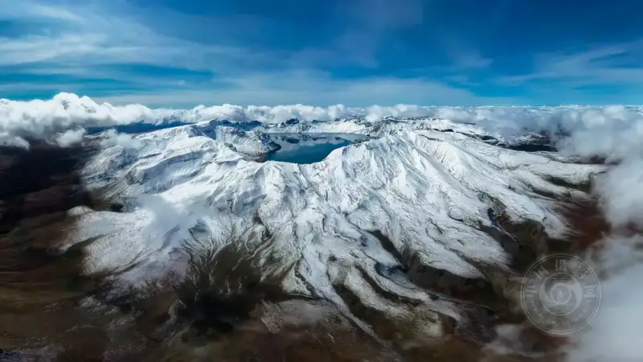
2nd Aerial View National Aerial Photography Contest, Grand Prize
“Changbai Wonderland” (one of a series) ©Gao Pengfei (Changchun, Jilin)
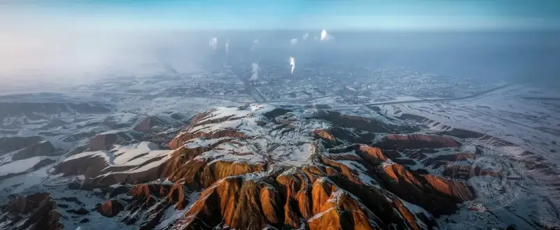
2nd Aerial View National Aerial Photography Contest, Urban Landscape, Silver Award
“Panorama of the Petrochemical City Under a Mud Volcano” ©Zhang Bo (Karamay, Xinjiang)
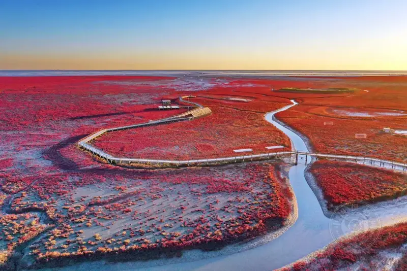
2nd Aerial View National Aerial Photography Contest, Nature, Silver Award
“Red Beach” (one of a series) ©Liu Quanguo (Tangshan, Hebei)
5. Compose with horizontal or vertical lines
Besides the horizon, you can use other horizontal or vertical lines as anchors. For example, a river, a coastline, or train tracks can make a horizontal line. It may not be as straight and level as the horizon, but it still draws the viewer's eye.
2nd Aerial View National Aerial Photography Contest, Grand Prize
“A Hundred Boats Race, A Thousand Sails Compete” ©Mao Yonghuai (Ningbo, Zhejiang)
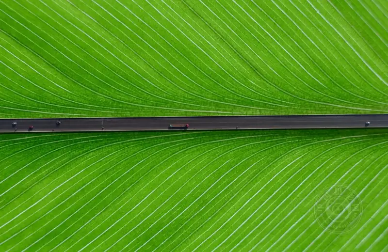
2nd Aerial View National Aerial Photography Contest, Abstract Art, Gold Award
“Pulse of the Earth” ©Hua Xiliang (Shizuishan, Ningxia)
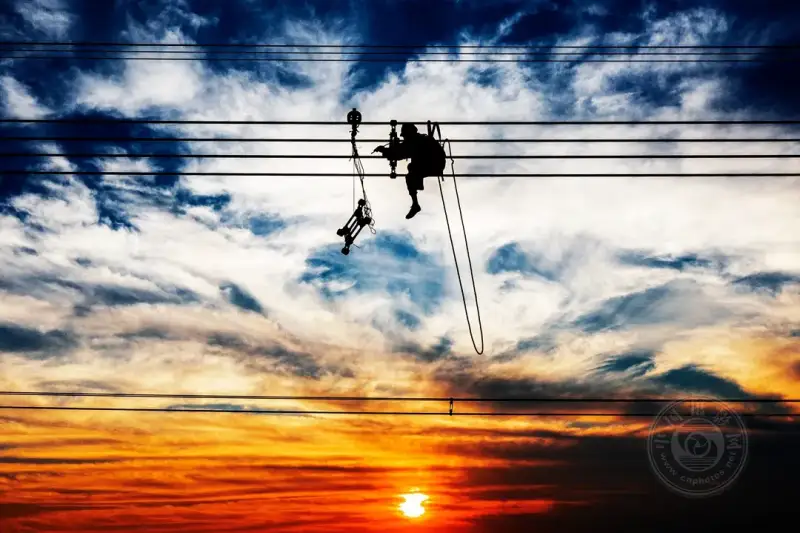
2nd Aerial View National Aerial Photography Contest, Humanistic Documentary, Silver Award
“Notes of Struggle” ©Zhu Zhaoping (Yancheng, Jiangsu)
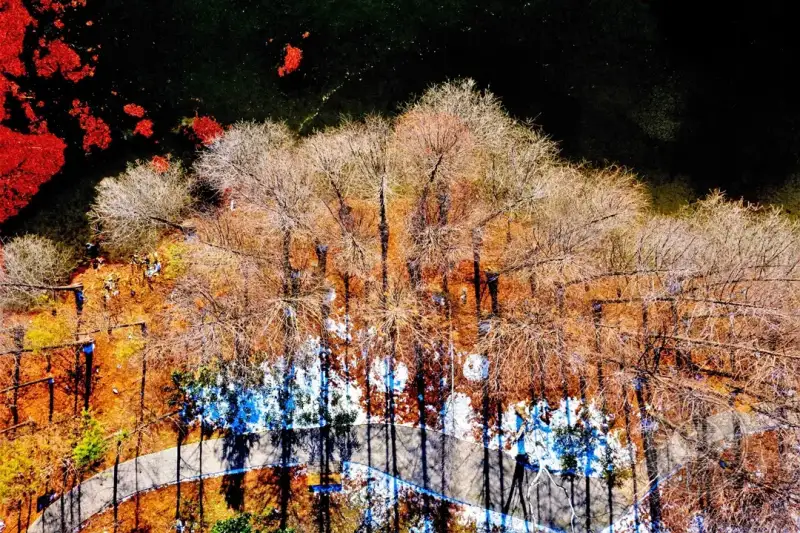
2nd Aerial View National Aerial Photography Contest, Nature, Bronze Award
“Beauty of Fir and Water” (one of a series) ©Lü Dugong (Nanjing, Jiangsu)
6. Diagonals
Like horizontal and vertical lines, a diagonal creates a path in the image that leads the viewer through it, even when the photo is full of detail. You can compose with many diagonals, such as a row of streets, or use just one line that crosses the frame.
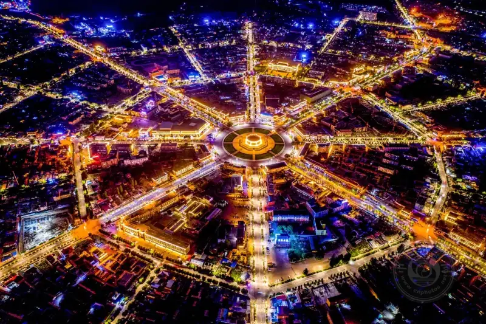
2nd Aerial View National Aerial Photography Contest, Urban Landscape, Silver Award
“Tekes at Night” ©Ba Faming (Wuwei, Gansu)
2nd Aerial View National Aerial Photography Contest, Humanistic Documentary, Bronze Award
“Blocks of the Age” ©Liang Yabai (Huaihua, Hunan)
2nd Aerial View National Aerial Photography Contest, Nature, Bronze Award
“Sea Ice on Jiaozhou Bay” (one of a series) ©Wei Cong (Nanning, Guangxi)
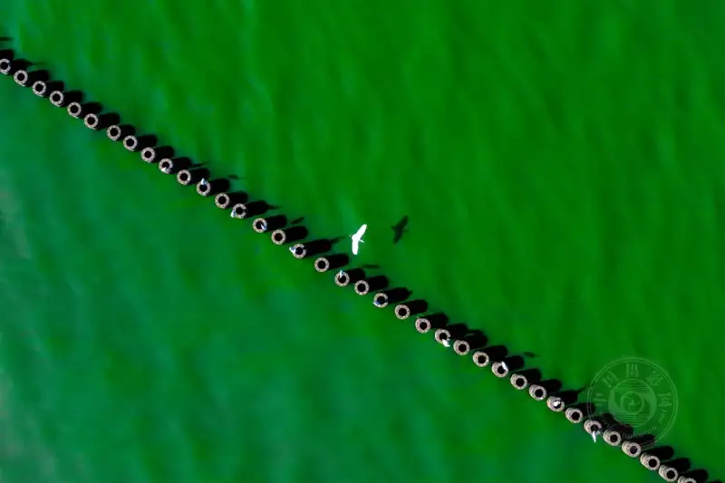
2nd Aerial View National Aerial Photography Contest, Nature, Bronze Award
“Skimming By” ©Xu Kunxing (Huzhou, Zhejiang)
7. Use portrait (vertical) composition
If you can, try rotating the camera and shooting in portrait. Most aerial photos are landscape, but portrait can be just as good and opens up more ideas.
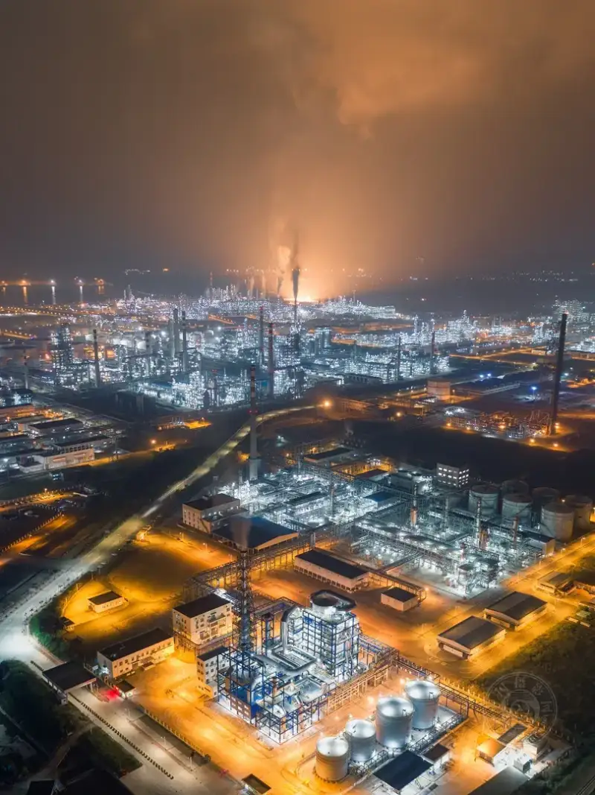
2nd Aerial View National Aerial Photography Contest, Urban Landscape, Silver Award
“The Bustling Daya Bay Petrochemical Zone” ©Lin Tuo (Guangzhou, Guangdong)
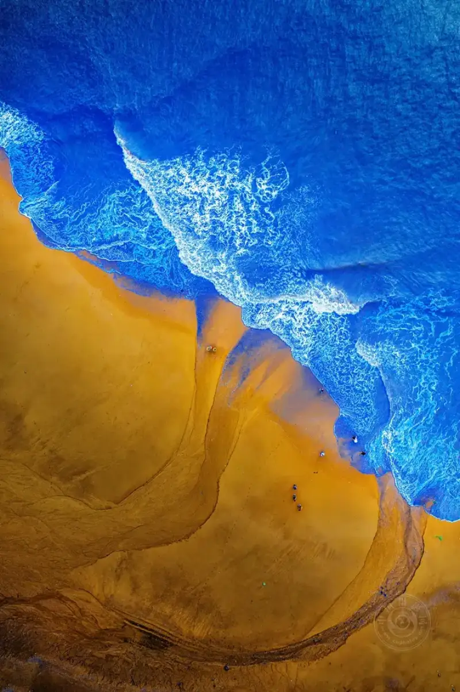
2nd Aerial View National Aerial Photography Contest, Abstract Art, Silver Award
“Harvesting the Tide Flats” ©Li Mingxian (Wuhu, Anhui)
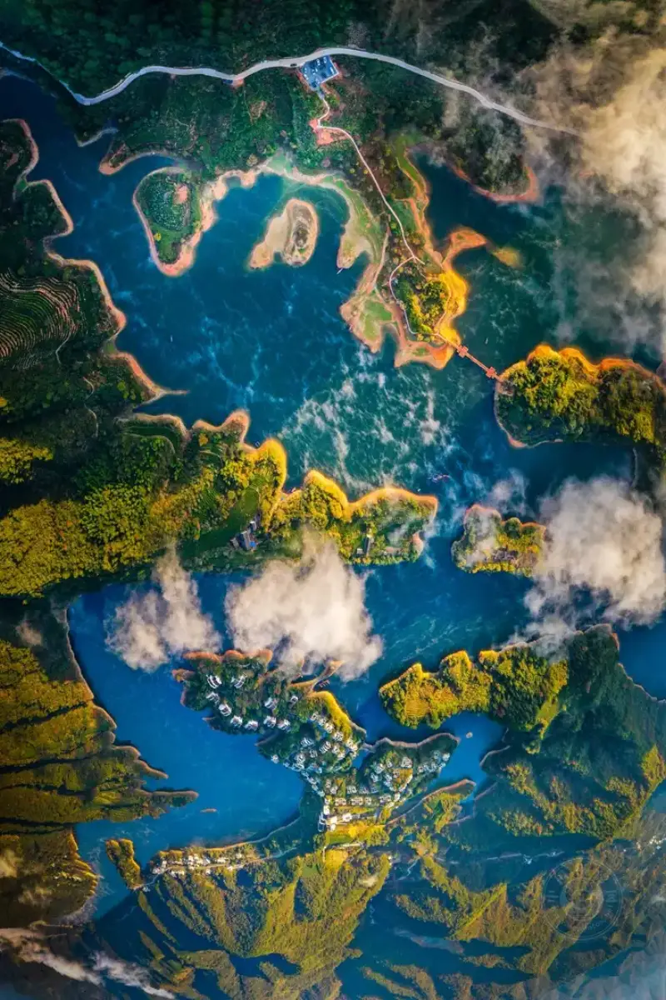
2nd Aerial View National Aerial Photography Contest, Nature, Silver Award
“Overlooking Rongxi Lake” ©Yang Guotai (Hefei, Anhui)
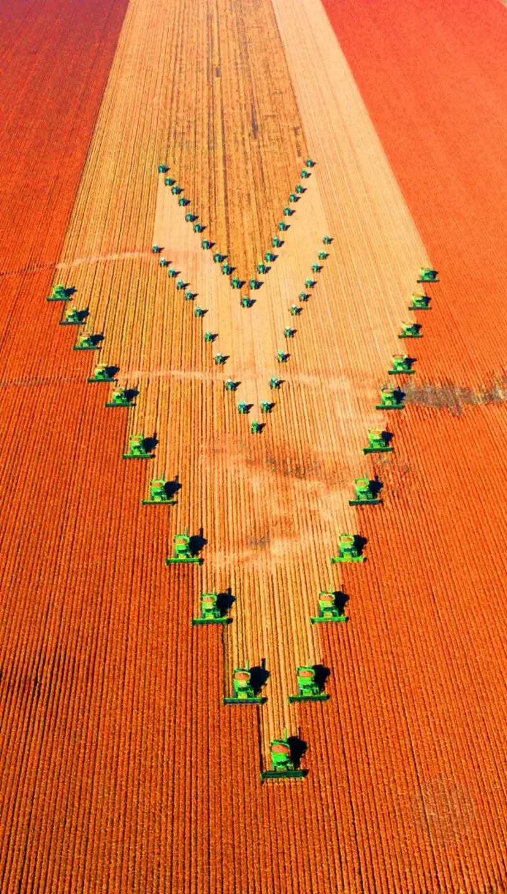
2nd Aerial View National Aerial Photography Contest, Humanistic Documentary, Bronze Award
“Toward a Moderately Prosperous Life” (one of a series) ©Sun Zhijiang (Harbin, Heilongjiang)
8. Avoid smudges, condensation, and reflections
Nothing ruins a great shot like a distracting smudge or reflection. This is why the best aerial photos are usually taken from an open window or with a drone.
Even so, with preparation you can still shoot great photos from a commercial airplane window. First, bring a cloth so you can wipe smudges off the glass. You cannot clear the condensation or ice on the outside, but you can shoot early in the flight before it builds up.
Your next challenge is the reflection of the window glass. Wear neutral colors such as gray to cut reflection. Then turn off the flash, because it only bounces back off the window. Switch to manual focus too. Now you can aim the camera at the scene outside rather than at the glass.
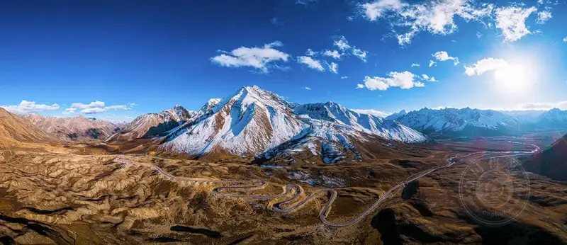
2nd Aerial View National Aerial Photography Contest, Grand Prize
“Demula Pass” ©Li Jicai (Liuzhou, Guangxi)
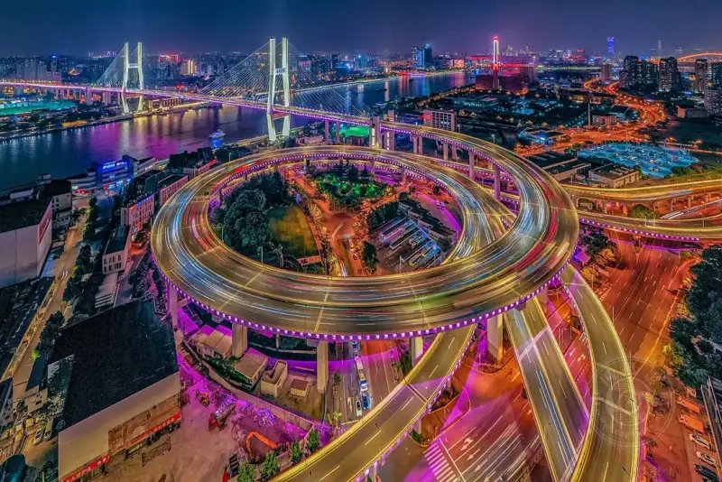
2nd Aerial View National Aerial Photography Contest, Urban Landscape, Gold Award
“Flowing Light and Color” ©Wang Lihua (Shenyang, Liaoning)
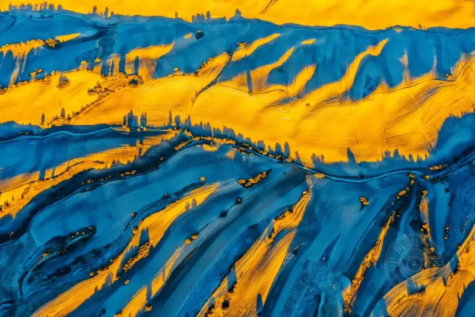
2nd Aerial View National Aerial Photography Contest, Nature, Gold Award
“Golden Earth” ©Yang Yinxue (Xinjiang)
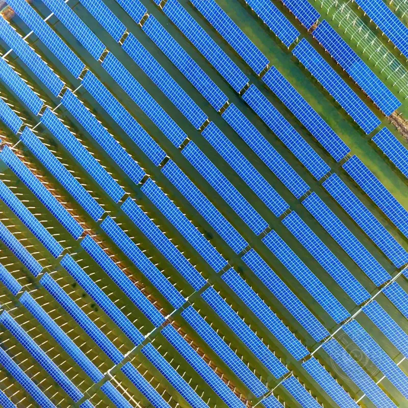
2nd Aerial View National Aerial Photography Contest, Humanistic Documentary, Silver Award
“Star of New Energy” (one of a series) ©Xue Jiangfeng (Yuhuan, Zhejiang)